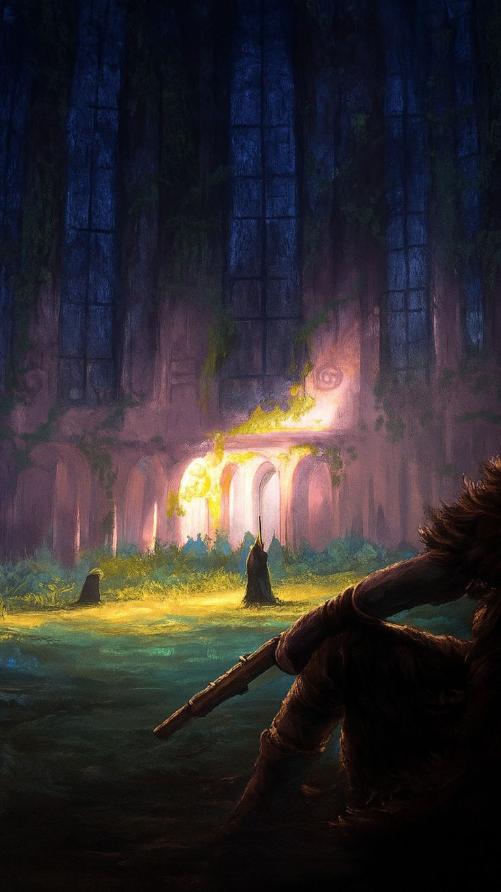

سيؤدي ساتورو جوجو صوت شخصية لوكي، وهي شخصية من قوس إلباف.
Category: Anime · One Piece
Published: 30/03/2026


كشفت أحداث قوس إلباف من أنمي ون بيس عن تفاصيل جديدة في معرض أنمي جابان 2026، وهي قادمة بالفعل بتغييرات مهمة حتى قبل عرضها الأول. من بين الميزات الجديدة، يبرز ظهور لوكي، الشخصية الرئيسية في إلباف، والذي سيؤدي صوته يويتشي ناكامورا، المعروف بأداء صوت غوجو في جوجوتسو كايسن. كما تشهد الموسيقى التصويرية تغييرات في هذه المرحلة الجديدة. ستكون أغنية البداية "لومينوس" من أداء آينا ذا إند (مغنية أغنية البداية الثانية لأنمي دان دا دان)، بينما ستكون أغنية النهاية من أداء فرقة 36km/h. علاوة على ذلك، سيعتمد الأنمي صيغة جديدة ابتداءً من عام ٢٠٢٦. فبعد أحداث "رأس البيضة"، سيُقسّم الإنتاج إلى حلقات على مدار العام، بواقع ٢٦ حلقة سنويًا كحد أقصى، ليحل محلّ النموذج القديم للبثّ شبه المتواصل الذي كان مُتبعًا منذ عام ١٩٩٩. ويهدف هذا التغيير عمليًا إلى مواءمة وتيرة الاقتباس مع المانغا، وتقليل الحلقات الطويلة، والسماح بتطور أقرب إلى العمل الأصلي. أما بالنسبة للقصة، فإنّ "إلباف" ليست مجرد جزيرة عادية. فقد ذُكرت أرض العمالقة في جميع أجزاء العمل، وتُصبح الآن إحدى أهمّ النقاط في المرحلة الأخيرة.